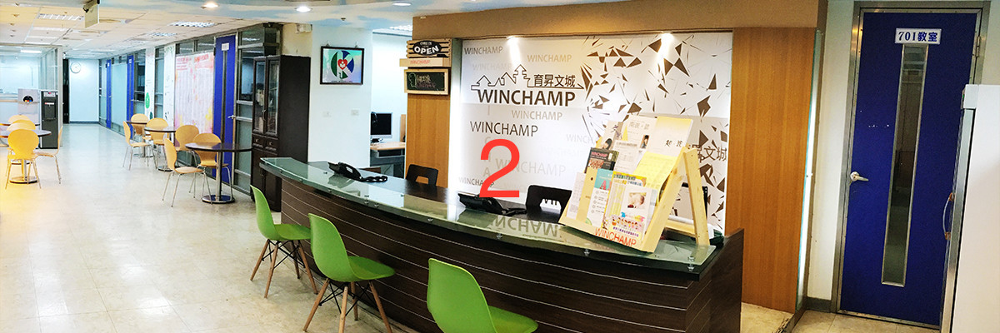
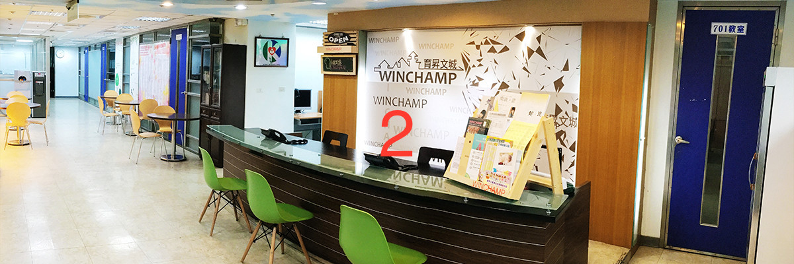

國文沈風沈風沈風沈風沈風沈風沈風沈風沈風沈風沈風沈風沈風沈風煩惱如何面對沒有範圍的學測國文嗎?完全針對考試題型著手，穩固觀念，不管題目如何變化都能輕鬆解決!記得，從生活中感受文學，從文學中領受生活，從閱讀到寫作的真髓。國文沈風煩惱如何面對沒有範圍的學測國文嗎?完全針對考試題型著手，穩固觀念，不管題目如何變化都能輕鬆解決!記得，從生活中感受文學，從文學中領受生活，從閱讀到寫作的真髓。國文沈風煩惱如何面對沒有範圍的學測國文嗎?完全針對考試題型著手，穩固觀念，不管題目如何變化都能輕鬆解決!記得，從生活中感受文學，從文學中領受生活，從閱讀到寫作的真髓。
 
